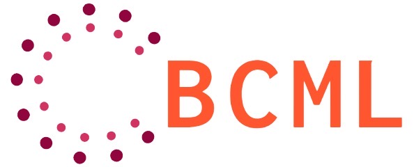

Yingfang Yuan

📧: y dot yuan at hw dot ac dot uk
EMB 1.50
Heriot-Watt University
Edinburgh, UK
Dr. Yingfang Yuan is a Research Fellow at Heriot-Watt University’s School of Mathematical and Computer Sciences, working with Dr. Wei Pang. He began his Ph.D. studies at Aberdeen University and completed them at Heriot-Watt University in 2023. He earned an MSc in Big Data and High-Performance Computing from the University of Liverpool in 2017. Dr. Yuan’s research focuses on Machine Learning and Deep Learning, with a particular emphasis on Graph Neural Networks, AutoDL, and AI4Science. He also has interests in Blockchain technology and trustworthy AI. Additionally, Dr. Yuan has entrepreneurial experience, applying AI techniques to solve real-world problems.

Our Lab!